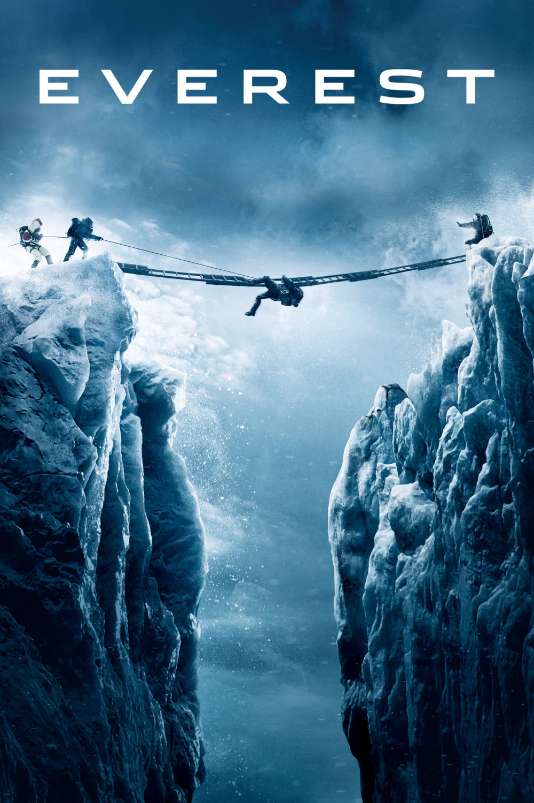

Мировая премьера: 18 сентября 2015
Слоган: Самое опасное место на планете.
Сюжет: Опытные альпинисты Роб Холл и Скотт Фишер ведут экспедиции на высочайшую вершину планеты. Миссия отважных путешественников становится крайне опасной, когда они сталкиваются с самой страшной бурей в истории восхождений. Противостоя разбушевавшейся стихии, люди демонстрируют невероятное мужество и силу духа на грани человеческих возможностей.
Режиссёр: Бальтасар Кормакур
В основе: Документальная книга Бека Уэзерса и Стивена Г. Мишо "Брошенный умирать" (США, 2000) и статья Питера Уилкинсона "Зона смерти" (журнал "Мен'c Джорнал", США, 1996)
В ролях:
| Джейсон Кларк | Роб Холл |
| Джош Бролин | Бек Уэзерс |
| Джейк Джилленхал | Скотт Фишер |
| Эмили Уотсон | Хелен Уилтон |
| Джон Хоукс | Даг Хэнсен |
| Сэм Уортингтон | Гай Коттер |
| Майкл Келли | Джон Кракауэр |
| Мартин Хендерсон | Энди "Харольд" Харрис |
| Кира Найтли | Джен Холл |
| Робин Райт | Пич Уэзерс |
| Элизабет Дебики | Доктор Кэролайн МакКензи |
| Ингвар Сигурдссон | Анатолий Букреев |
| Томас М. Райт | Майк Грум |
| Марк Дервин | Лу Касишке |
| Ванесса Кирби | Сэнди Хилл Питтмен |
| Миа Гот | Мэг Уэзерс |
Бюджет: $ 55 млн.
Кассовые сборы в США: $ 43 млн.
Кассовые сборы в мире: $ 203 млн.
Продолжительность: 1 ч. 54 мин.
Рейтинг: 7.1